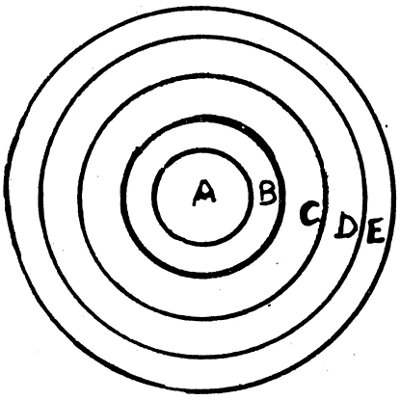
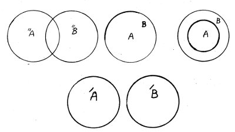

Porphyrios bu eserde Aristoteles’in kategoriler bahsini anlamak için cins, tür, fark (fasıl), araz ve hassanın ne olduğunu bilmek gerekir diye işe başlıyor. Bu bilginin tarifler yapmak, bölüm ve ispata yarayan şeyleri anlamada faydası vardır, önce “cins ve türlerin kendi başına mı (en soi) var oldukları, yoksa sırf zihindeki kavramlardan mı ibaret bulunduklarını (cisim mi, cisim değil mi olduklarını) aramaktan kaçınacağım. Bu çok derin bir sorudur” diyor. Cins ve tür kelimelerinin basit bir anlamı yoktur. Cins, aralarında bir bağlantı olan birçok ferdin gerek bütün olarak, gerekse kendi aralarında birliğini ifade eder. Bu anlamda mesela Herakles’lerin ırkına cins deniyor. Çünkü hepsi Herakles aslından çıkmış farz ediliyor. Faslın üç türlü anlamı vardı: 1) Ayrılabilen fasıllar, 2) Ayrılamayan fasıllar, 3) Kendi başına ve arızi ayrılmayan fasıllar. Hassa da dört türlüdür: a) Yalnız bir türe arızi olarak ait olup, tam türe ait olmayan hassa: Tıpla uğraşmak, geometri yapmak insana göre, bir nevi hassadır, b) Bütün bir türe ait olan hassa: İki ayaklılığın insana nispeti gibi, c) Yalnız bir türe, belirli bir zamana ait olan hassa: İhtiyarlıkta saçların ağarmasının insana ait olması gibi, d) Bütün varlık şartlarını tek bir türde birleştiren hassa: Gülmenin insana has olması gibi. Bu vasıflardan her biri “hassa”dır: Bir beygir varsa, kişneyen bir varlık var demektir. Araz, konuyu bozmadan meydana çıkan ve kaybolan şeydir. İki türlü araz vardır: 1) Konudan ayrı olan araz, 2) Konudan ayrılamayan araz. Mesela uyumak ayrılabilen bir arazdır. Kara olmak, zenci veya kaplumbağa için ayrılamayan birer arazdır. Fakat ak bir kaplumbağa veya rengini kaybetmiş bir zenci tasavvur edilebilir. “Araz, aynı konuda olabilen veya olamayan şeydir” diye tarif edilebilir. Nitekim arazın ne cins, ne tür, ne fasıl, ne hassa olmadığı ve her zaman konuda bulunmadığı da söylenebilir.
Cins ve fasılda ortak bir vasıf her ikisinin de türleri içine almasıdır. Mesela “akıllı”, akıldan yoksun olan hayvanları içine almadığı halde, kendi türleri olan meleği ve insanı içine alır. Cinse yüklenen her şey, bu cinse giren bütün türlere de yüklenebilir. Nitekim fasla yüklenen her şey, onu meydana getiren türe de yüklenebilir. Mesela hayvan cins olduğundan, canlı cevher ve duyulu olmak ona yüklenebilir. Bu yüklemler hayvan cinsi içinde bulunan bütün türlere de yüklenebilirler. Cins ve fasıl mahvolunca, onun içinde bulunan bütün şeyler de mahvolur. Mesela hayvan yoksa ne insan, ne beygir olamayacaktır. Akıllı varlık yoksa akıllı hayvan da olamaz.

Cins ve türün her ikisi de birçok terimlere nispet edilmeleri bakımından ortaktırlar. Her ikisi de nispet edildikleri terimlerinden önce gelirler. Her biri bir bütün teşkil ederler. Buna karşılık, onların bazı farkları da vardır: 1) Cins türleri içine alır. Tür ise cinsin içine girer. Çünkü cins türden daha geniştir. 2) Cinsler önce gelirler ve fasıllar yardımı ile türleri ayırırlar. 3) Cinsler yok olunca, türler de yok olur. Halbuki türün yok olması ile cins yok olmaz. 4) Tür bulununca, ister istemez cins vardır. Fakat cins var olunca, mutlaka tür yoktur. 5) Cins özel ve tür genel olamaz.
Cinsle hassanın karşılaştırılması: a) Cins ve hassa türleri takip ederler. Zira var olan bir şey insansa, hayvan da vardır. Eğer bir şey insansa, onda “gülmek” yetisi vardır, b) Cins türlere nispet edilebilir. Hassa ise ondan çıkan fertlere nispet edilir. Çünkü insan ve at eşit olarak hayvandırlar. Antinos ve Melitos eşit olarak gülebilirler.

Porphyrios’un Isagogia’da incelediği bu kavramlara beş tümel deniyor (Aynı yerde tümeller veya külliyat-i-hams da denir). Ortaçağda tümellerin isim mi, gerçek mi olduklarının tartışması bu kitaptan doğmuştur. İsimcilerle gerçekçilerin çekişmeleri ancak Batı’da Abelardus’un kavramcılığı ile uzlaştırılmış ve bir hal yolu bulmuştur. Bu cereyanlardan birincisine göre bir koyun türü isimden ibarettir. Gerçekte ayrı ayrı koyunlar vardır, ikincisine göre koyunların ferdi varlıkları üstünde koyun türü diye gerçek bir tümel vardır. Üçüncüsüne göre koyun türü veya hayvan cinsi yalnız insanların zihninde vardır.
Beş tümele dayanarak yapılan tarifler, Aristoteles’in tarif (tanım) kuramını açıklamıştır. Buna göre tam bir tanım, bir şeyin yakın cinsi ile yakın faslından ibaret bir önermedir. Mesela insan akıllı (nâtık) bir hayvandır önermesi tam bir tanımdır. Bundan sonra eksik tanımlar gelir. Bunlar İslam mantıkçıları tarafından “hadd-i tam”, “hadd-i nâkıs”, “resm-i tam”, “resm-i nâkıs” adları ile ifade edilmektedir. Hadd-i tam, yakın cins ile yakın fasıldan kurulur. Hadd-i nâkıs, uzak cins ile yakın fasıldan; resm-i tam, yakın cins ile hassadan; resm-i nâkıs, araz’dan ibarettir.
Osmanlı devrinin son mantıkçılarından olan Cevdet Paşa tam bir tanımın vasıflarının “efradını câmi ve ağyarını mâni” olmak olduğunu söylüyordu. Yani bir tanım yakın cins yardımı ile bütün fertleri içine almalı ve fasıl yardımı ile de ayrıldığı bütün vasıflar ve şeyleri göstermelidir. Latinler bunu “Omni et soli definitum” sözü ile ifade etmekte idiler.